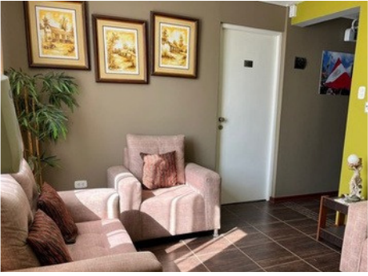
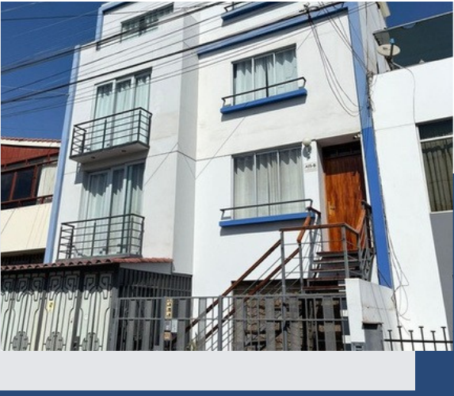
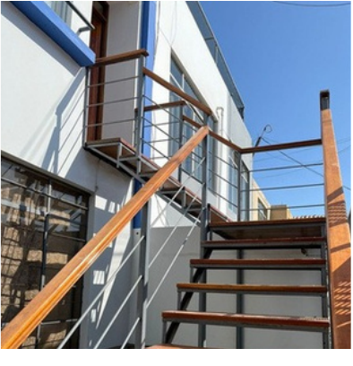
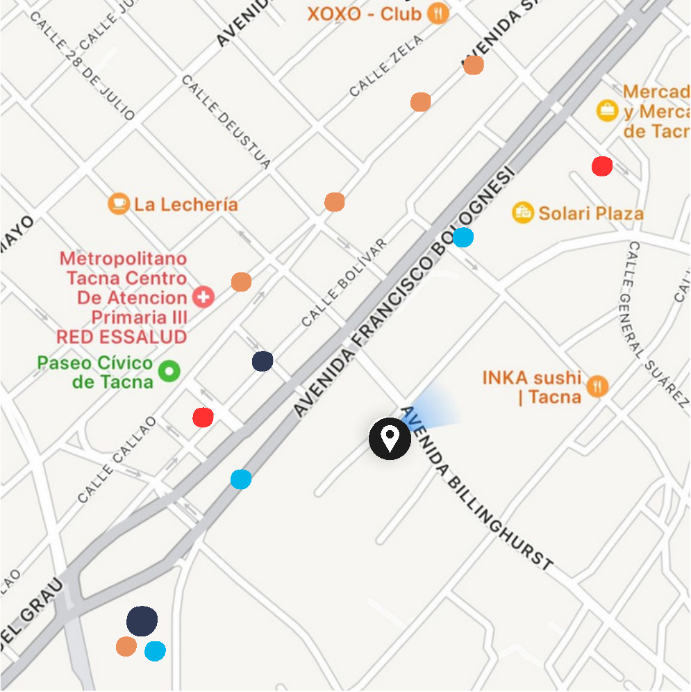

APARTAMENTOS 201 · 202 · 203
Red ARICA SUITES
Contraseña 50454010
HOSPEDAJE · TACNA, PERÚ · SEDE ZELA
En esta guía encontrarás las indicaciones esenciales para que puedas instalarte con facilidad en nuestra sede Zela.
Ver indicaciones ↘
01 · LLEGADA
Te recomendamos tomar un taxi seguro e indicar como referencia que estamos a espaldas de la Oficina de Correos (SERPOST), a la altura de la primera cuadra de Billinghurst.
Al acercarte al alojamiento, identifica el ingreso principal y sigue las indicaciones que recibiste con tu reserva.
Las instrucciones para acceder a las llaves se envían de forma privada por WhatsApp antes de tu llegada.
Sube al piso correspondiente, ubica el número de tu apartamento reservado e instálate con tranquilidad.

02 · UNA ESTADÍA AGRADABLE PARA TODOS
Estamos felices de recibirte en Arica Suites. Ayúdanos cumpliendo estas reglas para construir juntos un espacio seguro y agradable para todos.
Más detalles publicados en la puerta de la habitación.

03 · CONEXIÓN
APARTAMENTOS 201 · 202 · 203
Red ARICA SUITES
Contraseña 50454010
APARTAMENTOS 301 · 302 · 401
Red ARICASUITES 2
Contraseña 50454010
04 · ALREDEDORES

Alojamiento Arica Suites
Farmacia
Cochera
Cajeros
Minimarket